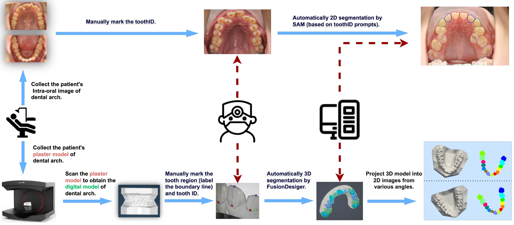
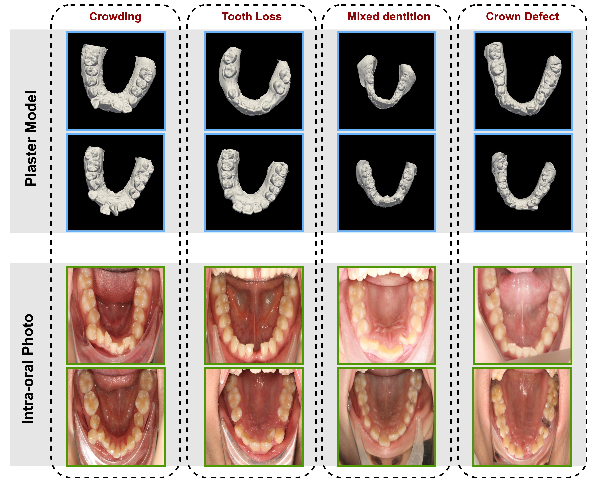

The largest 2D intra-oral scan dataset IO150k
We create the first open-source 2D intraoral scan dataset IO150k, which consists of:
(1) Challenge80K, 80K rendered images generated from 1,800 3D scans sourced from 3D Teeth Scan Segmentation and Labeling Challenge 2023.
(2) Plaster70K, 70K images of 940 oral plaster models made before, during, and after taking the orthodontic treatment.
(3) RGB0.8K, 0.8K RGB standard intraoral photos taken before orthodontic treatment.
This dataset has the following key properties:
(1) Large: We have collected over 150K images that enable well-trained transformers that are usually more data-hungry than CNN models.
(2) Diverse: We cover a wide range of dental malformations (e.g., crowded dentition and edentulism) to ensure the ability to generalize to clinical applications.
(3) Professional: The data is annotated by multiple professional orthodontists using a human-machine hybrid algorithm,
ensuring accurate tooth position recognition in complex instances. Please see Appendix A for dataset statistics.
Illustration of human-machine hybrid annotation process
Data Samples
Data statistics